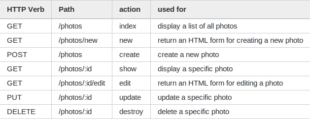

Rails Routes
今天研究了一下Rails中的路由，刚接触Rails的时候，路由是一个大难题，
包括它那充满magic的helper方法。
Rails实践了RESTful的路由方式，将HTTP的动作映射为web资源的七种典型
操作。
在config/routes.rb中加上resources :photos代表这是一个典型的REST资
源。Rails自动产生相关的路由。

index,new,create,show,edit,update,destroy是控制器中典型的七个action
，HTTP动作和url路径的组合确定了由哪一个控制器及action处理请求。
并且会产生相应的helper。
photos_path #/photos
new_photo_path #/photos/new
edit_photo_path(:id) #/photos/:id/edit
photo_path(:id) #/photos/:id
参数也可以是相应的对象本身，在link_to等helper中甚至可以直接使用对象
“